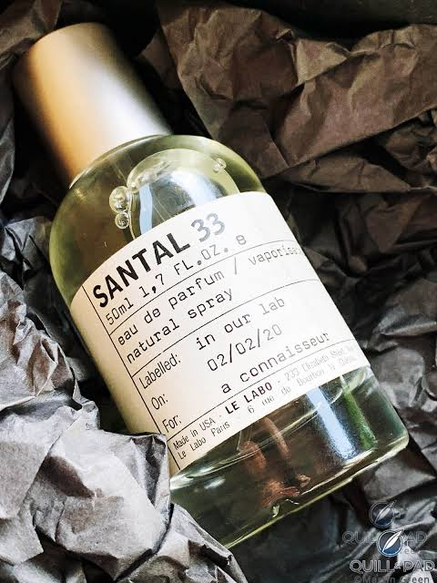
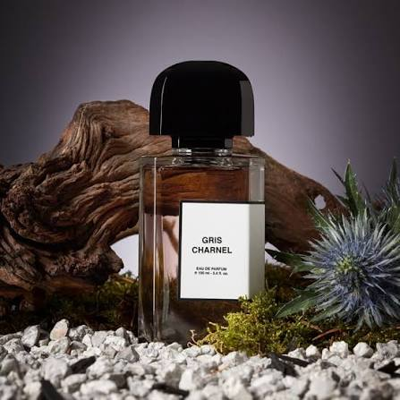
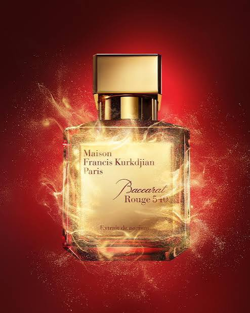
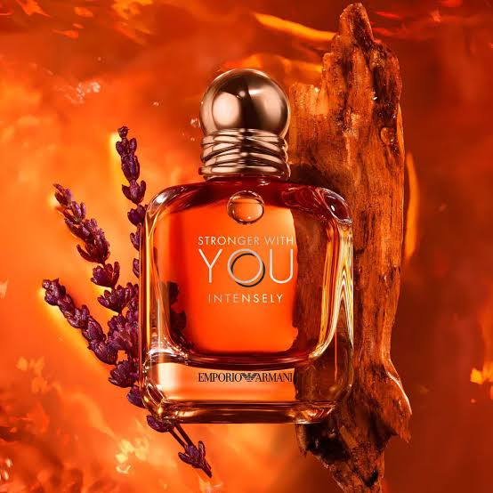
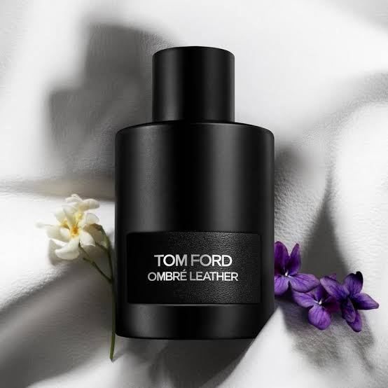

My Cologne Collection
This is my collection of colognes that i love. Each bottle represents a different scent, memory or personal preference, whether its a fresh everyday fragrance, a bold scent for special occasions or a classic cologne that ive always enjoyed. This collection represents my interest in fragrances and the different scents that have become favorites over time.

Santal 33
Le Labo - Eau de Parfum | Woody & Spicy | Unisex
Santal 33 is a warm, woody fragrance known for its smooth sandalwood scent with hints of cedar. It is meaningful to me because it was one of the fragrances that really got me interested collecting colognes.It has become one of my favorites colognes that i own.

Gris Charnel
BDK Parfums - Eau de Parfum | Woody & Spicy | Unisex
Gris Charnel is meaningful to me because i really enjoy its warm, smooth and slightly sweet scent. I especially like wearing it during cold weather and in the evening, which makes it one of the fragrances i look foward to using.
Louis Vuitton Imagination
Eau de Parfum | Citrus & Amber | Fresh & Clean
Imagination is meaningful to me because it reminds me of traveling with my siblings. Its fresh and clean scent brings back memories of beign together, exploring new places and enjoying trips.

Baccarat Rouge 540
Eau de Parfum | Amber & Floral
Rouge 540 is a sweet, warm and luxurious fragrance with a distinctive blend of saffron. This cologne is meaningful to me because it reminds me of special moments when i wanted to dress up and feel confident.

Stronger With You Intensely
Emporio Armani - Eau de Parfum | Amber & Vanilla | Warm & Sweet
Stronger With You Intensely is meaningful to me because it reminds me of the holiday season. Its warm and sweet scent makes me think of cold nights, holiday lights and spending time with family.

Tom Ford Ombre Leather
Tom Ford - Eau de Parfum | Leather & Woody | Unisex
Tom Ford Ombre Leather is meaninful to me because it is the one cologne my brother always steals from me. Everytime i notice the bottle is missing, i already know who took it. It has become a funny memory between us and makes it stand out in my collection.